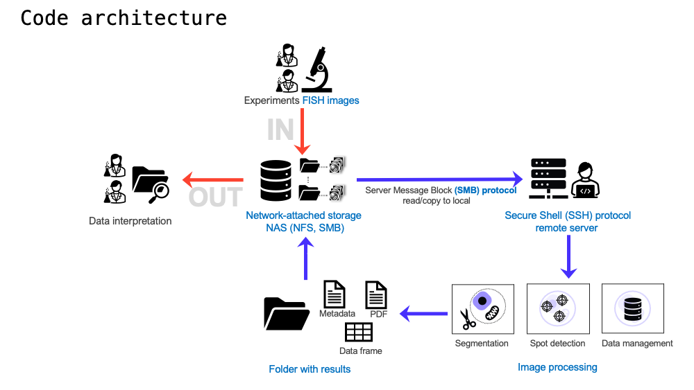

FISH Processing: Module Guide
{kind=link}
This module uses pysmb to allow the user to transfer data between a Network-attached storage (NAS) and remote or local server. Then it uses Cellpose to detect and segment cells on microscope images. Big-FISH is used to quantify the number of spots per cell. Data is processed using Pandas data frames for single-cell and cell population statistics. Authors: Luis U. Aguilera, Joshua Cook, and Brian Munsky.
If you use this repository, make sure to cite:
- class src.fish_analyses.BigFISH(image, FISH_channel, voxel_size_z=300, voxel_size_yx=103, psf_z=350, psf_yx=150, cluster_radius=350, minimum_spots_cluster=4, show_plot=False, image_name=None)
This class is intended to detect spots in FISH images using Big-FISH Copyright © 2020, Arthur Imbert. The format of the image must be [Z, Y, X, C].
Parameters
The description of the parameters is taken from Big-FISH BSD 3-Clause License. Copyright © 2020, Arthur Imbert.
- imageNumPy array
Array of images with dimensions [Z, Y, X, C] .
- FISH_channelint
Specific channel with FISH spots that are used for the quantification
- voxel_size_zint, optional
Height of a voxel, along the z axis, in nanometers. The default is 300.
- voxel_size_yxint, optional
Size of a voxel on the yx plan in nanometers. The default is 150.
- psf_zint, optional
Theoretical size of the PSF emitted by a spot in the z plan, in nanometers. The default is 350.
- psf_yxint, optional
Theoretical size of the PSF emitted by a spot in the yx plan in nanometers.
- cluster_radiusint, optional
Maximum distance between two samples for one to be considered as in the neighborhood of the other. Radius expressed in nanometer.
- minimum_spots_clusterint, optional
Number of spots in a neighborhood for a point to be considered as a core point (from which a cluster is expanded). This includes the point itself.
- show_plotbool, optional
If True shows a 2D maximum projection of the image and the detected spots. The default is False
- image_namestr or None.
Name for the image with detected spots. The default is None.
- detect()
This method is intended to detect RNA spots in the cell and Transcription Sites (Clusters) using Big-FISH Copyright © 2020, Arthur Imbert.
Returns
- clusterDectionCSVnp.int64 Array with shape (nb_clusters, 5) or (nb_clusters, 4).
One coordinate per dimension for the centroid of the cluster (zyx or yx coordinates), the number of spots detected in the clusters, and its index.
- spotDectionCSVnp.int64 with shape (nb_spots, 4) or (nb_spots, 3).
Coordinates of the detected spots. One coordinate per dimension (zyx or yx coordinates) plus the index of the cluster assigned to the spot. If no cluster was assigned, the value is -1.
- class src.fish_analyses.CellSegmentation(image: numpy.ndarray, channels_with_cytosol=None, channels_with_nucleus=None, diameter_cytosol: float = 150, diamter_nucleus: float = 100, optimization_segmentation_method='z_slice_segmentation', remove_fragmented_cells: bool = False, show_plot: bool = True, image_name=None)
This class is intended to detect cells in FISH images using Cellpose . This class segments the nucleus and cytosol for every cell detected in the image. The class uses optimization to generate the meta-parameters used by cellpose.
Parameters
- imageNumPy array
Array of images with dimensions [Z, Y, X, C] or maximum projection with dimensions [Y, X, C].
- channels_with_cytosolList of int
List with integers indicating the index of channels for the cytosol segmentation. The default is None.
- channels_with_nucleuslist of int
List with integers indicating the index of channels for the nucleus segmentation. The default is None.
- diameter_cytosolint, optional
Average cytosol size in pixels. The default is 150.
- diamter_nucleusint, optional
Average nucleus size in pixels. The default is 100.
- optimization_segmentation_method: str
Method used for the segmentation. The options are: ‘intensity_segmentation’, ‘z_slice_segmentation’, ‘gaussian_filter_segmentation’, and None.
- remove_fragmented_cells: bool, optional
If true, it removes masks in the border of the image. The default is False.
- show_plotbool, optional
If true, it shows a plot with the detected masks. The default is True.
- image_namestr or None.
Name for the image with detected spots. The default is None.
- calculate_masks()
This method performs the process of cell detection for FISH images using Cellpose.
Returns
- masks_complete_cellsNumPy array. np.uint8
Image containing the masks for every cell detected in the image. Numpy array with format [Y, X].
- masks_nucleiNumPy array. np.uint8
Image containing the masks for every nuclei detected in the image. Numpy array with format [Y, X].
- masks_cytosol_no_nucleiNumPy array. np.uint8
Image containing the masks for every cytosol (removing the nucleus) detected in the image. Numpy array with format [Y, X].
- class src.fish_analyses.Cellpose(image: numpy.ndarray, num_iterations: int = 4, channels: list = [0, 0], diameter: float = 120, model_type: str = 'cyto', selection_method: str = 'max_cells_and_area', NUMBER_OF_CORES: int = 1)
This class is intended to detect cells by image masking using Cellpose . The class uses optimization to maximize the number of cells or maximize the size of the detected cells.
Parameters
- imageNumPy array
Array of images with dimensions [T, Y, X, C].
- num_iterationsint, optional
Number of iterations for the optimization process. The default is 5.
- channelsList, optional
List with the channels in the image. For gray images use [0, 0], for RGB images with intensity for cytosol and nuclei use [0, 1] . The default is [0, 0].
- diameterfloat, optional
Average cell size. The default is 120.
- model_typestr, optional
Cellpose model type the options are ‘cyto’ for cytosol or ‘nuclei’ for the nucleus. The default is ‘cyto’.
- selection_methodstr, optional
Option to use the optimization algorithm to maximize the number of cells or maximize the size options are ‘max_area’ or ‘max_cells’ or ‘max_cells_and_area’. The default is ‘max_cells_and_area’.
- NUMBER_OF_CORESint, optional
The number of CPU cores to use for parallel computing. The default is 1.
- calculate_masks()
This method performs the process of image masking using Cellpose.
Returns
- selected_masksList of NumPy arrays
List of NumPy arrays with values between 0 and the number of detected cells in the image, where an integer larger than zero represents the masked area for each cell, and 0 represents the background in the image.
- class src.fish_analyses.DataProcessing(spotDectionCSV, clusterDectionCSV, masks_complete_cells, masks_nuclei, masks_cytosol_no_nuclei, spot_type=0, dataframe=None, reset_cell_counter=False, image_counter=0)
This class is intended to extract data from the class SpotDetection and return the data as a dataframe. This class contains parameter descriptions obtained from Big-FISH Copyright © 2020, Arthur Imbert.
Parameters
- spotDectionCSV: np.int64 Array with shape (nb_clusters, 5) or (nb_clusters, 4).
One coordinate per dimension for the cluster’s centroid (zyx or yx coordinates), the number of spots detected in the clusters, and its index.
- clusterDectionCSVnp.int64 with shape (nb_spots, 4) or (nb_spots, 3).
Coordinates of the detected spots . One coordinate per dimension (zyx or yx coordinates) plus the index of the cluster assigned to the spot. If no cluster was assigned, the value is -1.
- masks_complete_cellsList of NumPy arrays or a single NumPy array
Masks for every cell detected in the image. The list contains the mask arrays consisting of one or multiple Numpy arrays with format [Y, X].
- masks_nuclei: List of NumPy arrays or a single NumPy array
Masks for every cell detected in the image. The list contains the mask arrays consisting of one or multiple Numpy arrays with format [Y, X].
- masks_cytosol_no_nucleiList of NumPy arrays or a single NumPy array
Masks for every cell detected in the image. The list contains the mask arrays consisting of one or multiple Numpy arrays with format [Y, X].
- spot_typeint, optional
A label indicating the spot type, this counter starts at zero, increasing with the number of channels containing FISH spots. The default is zero.
- dataframePandas dataframe or None.
Pandas dataframe with the following columns. image_id, cell_id, spot_id, nucleus_y, nucleus_x, nuc_area_px, cyto_area_px, cell_area_px, z, y, x, is_nuc, is_cluster, cluster_size, spot_type, is_cell_fragmented. The default is None.
- reset_cell_counterbool
This number is used to reset the counter of the number of cells. The default is False.
- image_counterint, optional
counter for the number of images in the folder. The default is zero.
- get_dataframe()
This method extracts data from the class SpotDetection and returns the data as a dataframe.
Returns
- dataframePandas dataframe
Pandas dataframe with the following columns. image_id, cell_id, spot_id, nucleus_y, nucleus_x, nuc_area_px, cyto_area_px, cell_area_px, z, y, x, is_nuc, is_cluster, cluster_size, spot_type, is_cell_fragmented.
- class src.fish_analyses.Intensity(image, dataframe, spot_size)
This class is intended to calculate the average intensity in an spot and substract the intensity in background. This class is still a work in progress.
Parameters
- imageNumPy array
Array of images with dimensions [Z, Y, X, C] .
- dataframePandas dataframe
Pandas dataframe with the following columns. image_id, cell_id, spot_id, nucleus_y, nucleus_x, nuc_area_px, cyto_area_px, cell_area_px, z, y, x, is_nuc, is_cluster, cluster_size, spot_type, is_cell_fragmented.
- get_intensity()
This method extracts data from the class SpotDetection and return the data as a dataframe.
Returns
- dataframePandas dataframe
Pandas dataframe with the following columns. image_id, cell_id, spot_id, nucleus_y, nucleus_x, nuc_area_px, cyto_area_px, cell_area_px, z, y, x, is_nuc, is_cluster, cluster_size, spot_type, is_cell_fragmented.
- class src.fish_analyses.MergeChannels(directory: str, substring_to_detect_in_file_name: str = '.*_C0.tif', save_figure: bool = False)
This class takes images as arrays with format [Z, Y, X] and merges them in a NumPy array with format [Z, Y, X, C]. It recursively merges the channels in a new dimension in the array. The minimum number of channels 2 maximum is 4.
Parameters
- directory: str or PosixPath
Directory containing the images to merge.
- substring_to_detect_in_file_name: str
String with the prefix to detect the names of the files.
- save_figure: bool, optional
If True, it saves the merged images as tif. The default is False.
- checking_images()
Method that reads all images in the folder and returns a flag indicating if each channel in the image is separated in an independent file.
Returns
- FlagBool
If True, it indicates that each channel is split into different files. If False, it indicates that the image is contained in a single file.
- merge()
Method takes all the images in the folder and merges those with similar names.
Returns
- list_file_namesList of strings
List with strings of names.
- list_merged_imagesList of NumPy arrays
List of NumPy arrays with format np.uint16 and dimensions [Z, Y, X, C].
- number_filesint
The number of merged images in the folder.
- class src.fish_analyses.Metadata(data_dir, channels_with_cytosol, channels_with_nucleus, channels_with_FISH, diamter_nucleus, diameter_cytosol, minimum_spots_cluster, list_voxels=None, list_psfs=None, file_name_str=None)
This class is intended to generate a metadata file containing used dependencies, user information, and parameters used to run the code.
Parameters
- data_dir: str or PosixPath
Directory containing the images to read.
- channels_with_cytosolList of int
List with integers indicating the index of channels for the cytosol segmentation.
- channels_with_nucleuslist of int
List with integers indicating the index of channels for the nucleus segmentation.
- channels_with_FISHlist of int
List with integers indicating the index of channels for the FISH detection using.
- diameter_cytosolint
Average cytosol size in pixels. The default is 150.
- diamter_nucleusint
Average nucleus size in pixels. The default is 100.
- minimum_spots_clusterint
Number of spots in a neighborhood for a point to be considered as a core point (from which a cluster is expanded). This includes the point itself.
- list_voxelsList of lists or None
List with a tuple with two elements (voxel_size_z,voxel_size_yx ) for each FISH channel.
- list_psfsList of lists or None
List with a tuple with two elements (psf_z, psf_yx ) for each FISH channel.
- file_name_strstr
Name used for the metadata file. The final name has the format metadata_<<file_name_str>>.txt
- write_metadata()
This method writes the metadata file.
- class src.fish_analyses.NASConnection(path_to_config_file, share_name='share')
This class is intended to establish a connection between Network-Attached storage and a remote (or local) computer using pysmb . The class allows the user to connect to NAS, download specific files, and write backfiles to NAS. This class doesn’t allow the user to delete, modify or overwrite files in NAS. To use this class, you need to: 1) Use the university’s network or use the two-factor authentication to connect to the university’s VPN. 2) You need to create a configuration YAML file with the following format:
user: username: name_of_the_user_in_the_nas_server password: user_password_in_the_nas_server remote_address : ip or name for the nas server domain: domain for the nas server
Parameters
- path_to_config_filestr, or Pathlib object
The path in the local computer contains the config file.
- share_name: str
Name of the share partition to access in NAS. The default is ‘share’.
- connect_to_server(timeout=60)
This method establishes the connection to the NAS.
Parameters
- timeoutint, optional
Time in seconds to maintain a connection with the NAS. The default is 60 seconds.
- copy_files(remote_folder_path, local_folder_path, timeout=60, file_extension='.tif')
This method downloads tif files from NAS to a temporal folder in the local computer.
Parameters
- remote_folder_pathstr, Pathlib obj
The path in the remote folder to download.
- local_folder_pathstr, Pathlib obj
The path in the local computer where the files will be copied.
- timeoutint, optional
Time in seconds to maintain a connection with the NAS. The default is 60 seconds.
- file_extensionstr, optional.
String representing the file type to download.
- download_file(remote_file_path, local_folder_path, timeout=60)
This method download an specific file
Parameters
- remote_file_pathstr, Pathlib obj
The path in the remote file to download.
- local_folder_pathstr, Pathlib obj
The path in the local computer where the files will be copied.
- timeoutint, optional
Time in seconds to maintain a connection with the NAS. The default is 60 seconds.
- read_files(remote_folder_path, timeout=60)
This method reads all files from a NAS directory
Parameters
- remote_folder_pathstr, Pathlib obj
The path in the remote folder to download.
- timeoutint, optional
Time in seconds to maintain a connection with the NAS. The default is 60 seconds.
- write_files_to_NAS(local_file_to_send_to_NAS, remote_folder_path, timeout=60)
This method writes files from a local computer to NAS
Parameters
- local_file_to_send_to_NASstr, Pathlib obj
The path in the file to send to the NAS.
- remote_folder_pathstr, Pathlib obj
The path in the remote folder to download.
- timeoutint, optional
Time in seconds to maintain a connection with the NAS. The default is 60 seconds.
- class src.fish_analyses.PipelineFISH(data_dir, channels_with_cytosol=None, channels_with_nucleus=None, channels_with_FISH=None, diamter_nucleus=100, diameter_cytosol=200, minimum_spots_cluster=None, masks_dir=None, show_plot=True, list_voxels=[[500, 200]], list_psfs=[[300, 100]], file_name_str=None, optimization_segmentation_method='z_slice_segmentation')
This class is intended to perform complete FISH analyses including cell segmentation and spot detection.
Parameters
- parameter: bool, optional
parameter description. The default is True.
- list_voxelsList of lists or None
list with a tuple with two elements (voxel_size_z,voxel_size_yx ) for each FISH channel.
- list_psfsList of lists or None
list with a tuple with two elements (psf_z, psf_yx ) for each FISH channel.
- list_masksList of Numpy or None.
list of Numpy arrays where each array has values from 0 to n where n is the number of masks in the image.
- class src.fish_analyses.PlotImages(image, figsize=(8.5, 5), image_name='temp')
This class intended to plot all the channels from an image with format [Z, Y, X, C].
Parameters
- image: NumPy array
Array of images with dimensions [Z, Y, X, C].
- figsizetuple with figure size, optional.
Tuple with format (x_size, y_size). the default is (8.5, 5).
- plot()
This method plots all the channels for the original image.
- class src.fish_analyses.ReadImages(directory: str)
This class reads all tif images in a given folder and returns each image as a Numpy array inside a list, the names of these files, path, and the number of files.
Parameters
- directory: str or PosixPath
Directory containing the images to read.
- read()
Method takes all the images in the folder and merges those with similar names.
Returns
- list_imagesList of NumPy arrays
List of NumPy arrays with format np.uint16 and dimensions [Z, Y, X, C] or [T, Y, X, C].
- path_filesList of strings
List of strings containing the path to each image.
- list_files_namesList of strings
List of strings where each element is the name of the files in the directory.
- number_filesint
The number of images in the folder.
- class src.fish_analyses.RemoveExtrema(image: numpy.ndarray, min_percentile: float = 1, max_percentile: float = 99, selected_channels=None)
This class is intended to remove extreme values from an image. The format of the image must be [Y, X], [Y, X, C], or [Z, Y, X, C].
Parameters
- imageNumPy array
Array of images with dimensions [Y, X], [Y, X, C], or [Z, Y, X, C].
- min_percentilefloat, optional
Lower bound to normalize intensity. The default is 1.
- max_percentilefloat, optional
Higher bound to normalize intensity. The default is 99.
- selected_channelsList or None, optional
Use this option to select a list channels to remove extrema. The default is None and applies the removal of extrema to all the channels.
- remove_outliers()
This method normalizes the values of an image by removing extreme values.
Returns
- normalized_imagenp.uint16
Normalized image. Array with dimensions [Y, X, C], [Y, X], or [Z, Y, X, C].
- class src.fish_analyses.ReportPDF(directory, channels_with_FISH)
This class intended to create a PDF report including the images generated during the pipeline.
Parameters
- directory_results: str or PosixPath
Directory containing the images to include in the report.
- channels_with_FISHlist of int
List with integers indicating the index of channels for the FISH detection using.
This PDF file is generated, and it contains the processing steps for each image in the folder.
- create_report()
This method creates a PDF with the original images, images for cell segmentation and images for the spot detection.
- class src.fish_analyses.SpotDetection(image, FISH_channels, cluster_radius=350, minimum_spots_cluster=4, masks_complete_cells=None, masks_nuclei=None, masks_cytosol_no_nuclei=None, dataframe=None, image_counter=0, list_voxels=[[500, 200]], list_psfs=[[300, 100]], show_plot=True, image_name=None)
This class is intended to detect spots in FISH images using Big-FISH. The format of the image must be [Z, Y, X, C]. This class is intended to extract data from the class SpotDetection and return the data as a dataframe. This class contains parameter description obtained from Big-FISH Copyright © 2020, Arthur Imbert.
Parameters
The description of the parameters is taken from Big-FISH BSD 3-Clause License. Copyright © 2020, Arthur Imbert. image : NumPy array
Array of images with dimensions [Z, Y, X, C] .
- FISH_channelsint, or List
List of channels with FISH spots that are used for the quantification
- cluster_radiusint, optional
Maximum distance between two samples for one to be considered as in the neighborhood of the other. Radius expressed in nanometer.
- minimum_spots_clusterint, optional
Number of spots in a neighborhood for a point to be considered as a core point (from which a cluster is expanded). This includes the point itself.
- masks_complete_cellsNumPy array
Masks for every cell detected in the image are indicated by the array’s values, where 0 indicates the background in the image, and integer numbers indicate the ith mask in the image. Array with format [Y, X].
- masks_nuclei: NumPy array
Masks for every nucleus detected in the image are indicated by the array’s values, where 0 indicates the background in the image, and integer numbers indicate the ith mask in the image. Array with format [Y, X].
- masks_cytosol_no_nucleiNumPy array
Masks for every cytosol detected in the image are indicated by the array’s values, where 0 indicates the background in the image, and integer numbers indicate the ith mask in the image. Array with format [Y, X].
- dataframePandas Dataframe
Pandas dataframe with the following columns. image_id, cell_id, spot_id, nucleus_y, nucleus_x, nuc_area_px, cyto_area_px, cell_area_px, z, y, x, is_nuc, is_cluster, cluster_size, spot_type, is_cell_fragmented. The default is None.
- image_counterint, optional
counter for the number of images in the folder. The default is zero.
- list_voxelsList of tupples or None
list with a tuple with two elements (voxel_size_z,voxel_size_yx ) for each FISH channel. voxel_size_z is the height of a voxel, along the z axis, in nanometers. The default is 300. voxel_size_yx is the size of a voxel on the yx plan in nanometers. The default is 150.
- list_psfsList of tuples or None
List with a tuple with two elements (psf_z, psf_yx ) for each FISH channel. psf_z is the size of the PSF emitted by a spot in the z plan, in nanometers. The default is 350. psf_yx is the size of the PSF emitted by a spot in the yx plan in nanometers.
- show_plotbool, optional
If True, it shows a 2D maximum projection of the image and the detected spots. The default is False.
- image_namestr or None.
Name for the image with detected spots. The default is None.
- class src.fish_analyses.Utilities
This class contains miscellaneous methods to perform tasks needed in multiple classes. No parameters are necessary for this class.
- convert_to_int8(image, rescale=True)
This method converts images from int16 to uint8. Optionally, the image can be rescaled and stretched.
Parameters
- imageNumPy array
NumPy array with dimensions [Y, X, C]. The code expects 3 channels (RGB). If less than 3 values are passed, the array is padded with zeros.
- rescalebool, optional
If True it rescales the image to stretch intensity values to a 95 percentile, and then rescale the min and max intensity to 0 and 255. The default is True.
- merge_masks(list_masks)
This method is intended to merge a list of images into a single image (Numpy array) where each cell is represented by an integer value.
Parameters
- list_masksList of Numpy arrays.
List of Numpy arrays, where each array has dimensions [Y, X] with values 0 and 1, where 0 represents the background and 1 the cell mask in the image.
- separate_masks(masks)
This method is intended to separate an image (Numpy array) with multiple masks into a list of Numpy arrays where each cell is represented individually in a new NumPy array.
Parameters
- masksNumpy array.
Numpy array with dimensions [Y, X] with values from 0 to n where n is the number of masks in the image.